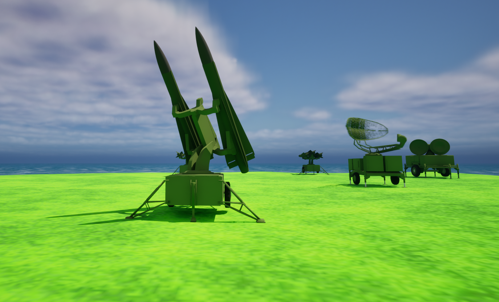

SAM Simulator
SAM Simulator is a project I made in Unreal Engine 5.3. The game is relatively simple, the player plays as a SAM operator and the goal is to shoot down aerial threats. Ranging from cruise missiles to enemy fighters, the player has to use the radars and instruments in order to lock targets and ultimately shoot them down, finishing the mission. Everything in the game is realistically simulated, from the physical radar beam that the search radar has, to the very much detailed flight model of the missile, everything works together simulating the SAM system similarly as to how it would work in real life. Everything inside the project is made by me.
The future of this project
For the future of this project, I am planning on releasing this game. The majority of the work for the game is mostly done at this point. Everything in the game has been made to be scalable, So it will also be possible to rapidly implement more varying systems into the game without having to remake a lot of things.